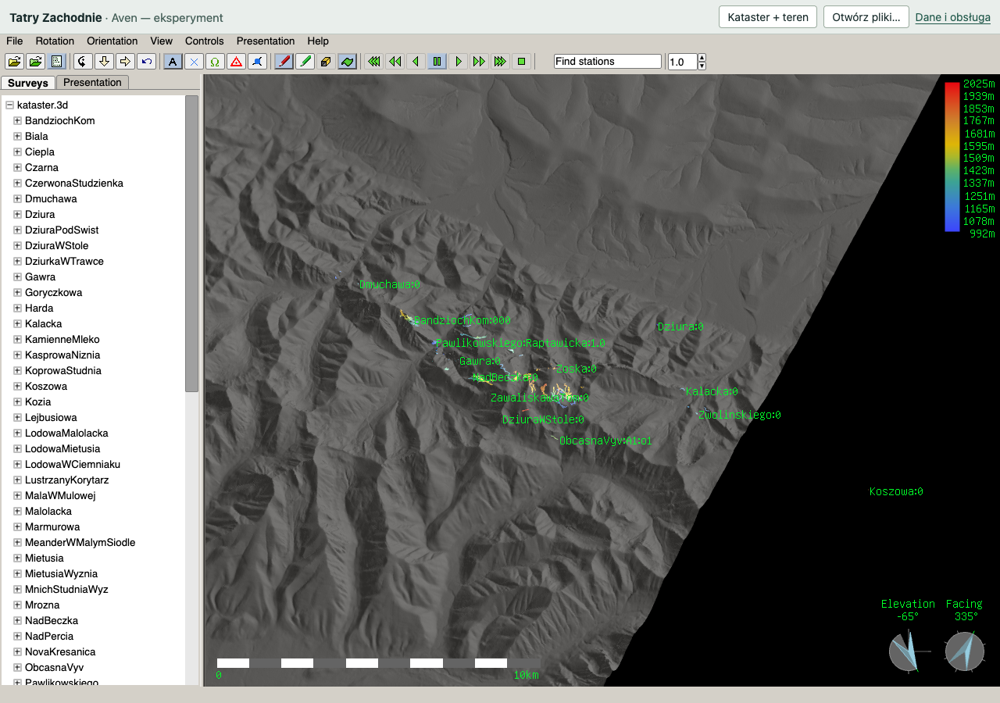
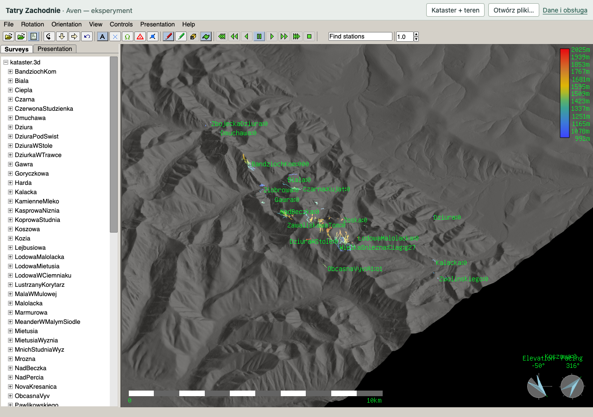
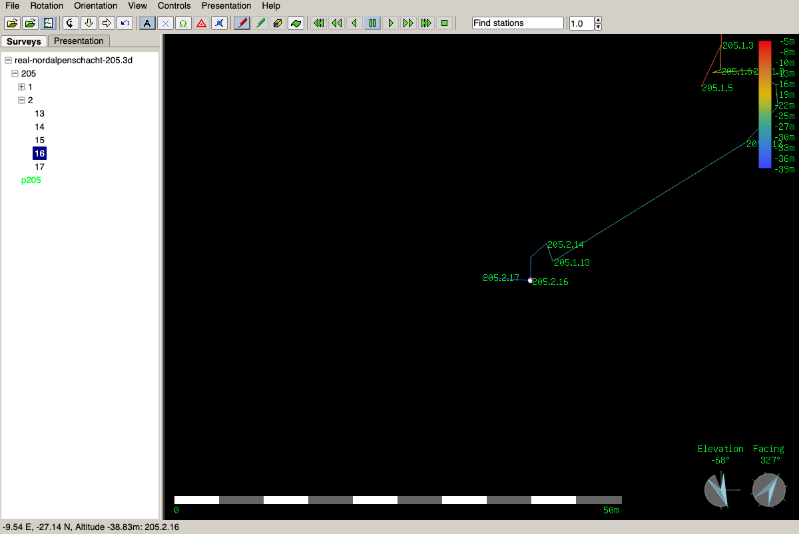
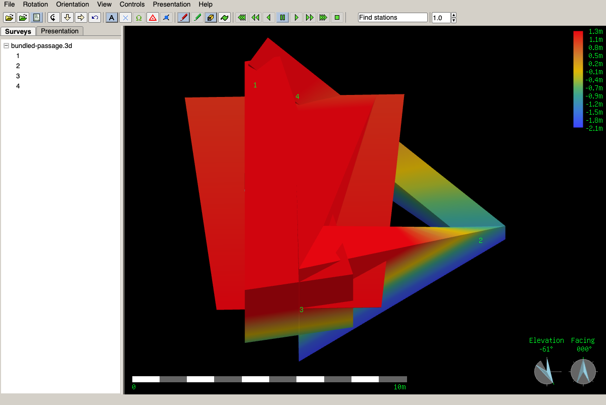
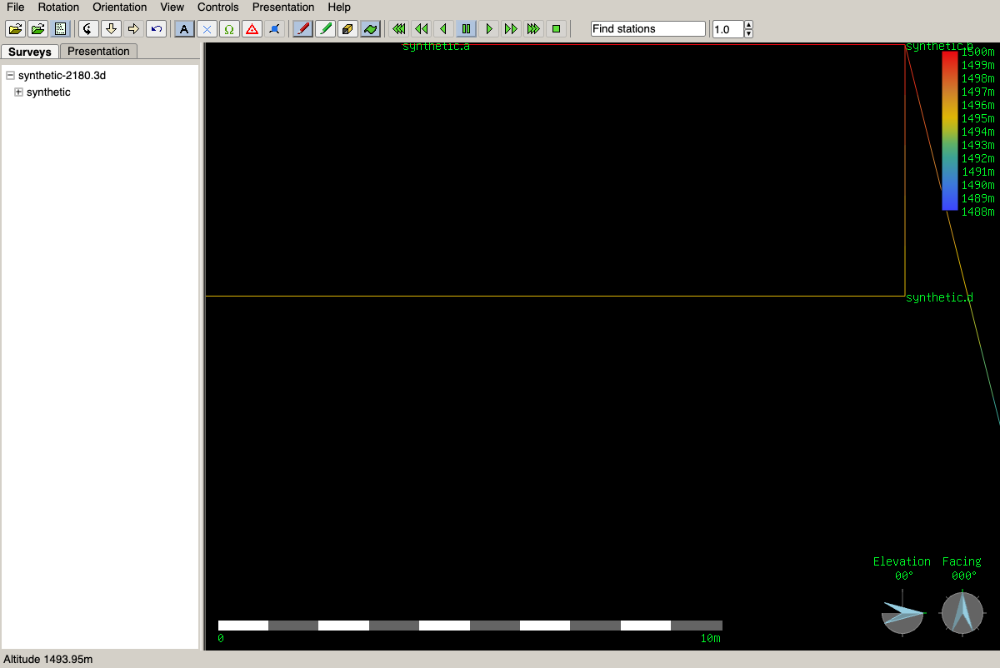

Wróć do AvenSprawdzenie Aven na GitHub Pages
Przeglądarka: Chromium 156.0.8078.74. Rzeczywista publiczna strona, bez lokalnego proxy i specjalnych nagłówków. Commity, CI i manifest dowodów.
- 7 kontroli strony: automatyczny Kataster + DEM, nawigacja, lokalne pliki bez wysyłania, przywrócenie sceny, konsola/WebGL.
- 11 działań Aven: stacje, drzewo, etykiety, LRUD, nawigacja, DEM i resize.
- Syntetyczny DEM: wszystkie 4225 punktów.
- Kataster i HGT: wszystkie 18 539 rekordów stacji; próbka 10 000 z 1 186 869 punktów terenu. Wysokości zachowane, wspólny datum pionowy niepotwierdzony.
- 24 pliki publicznego pakietu: zgodne bajty i SHA-256, prawidłowy MIME WASM.
- Błędny plik: zwykły komunikat Aven i udane otwarcie poprawnego pliku po zamknięciu komunikatu.
Zrzuty i obserwacje zawierają dane pochodne. Autorstwo, licencje i ograniczenia.
Automatyczny start

Nawigacja

Drzewo i wybór stacji

LRUD

Syntetyczny DEM — elewacja

Obserwacja Katastru · Obserwacja syntetyczna